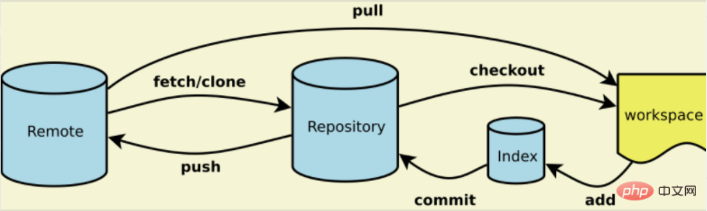
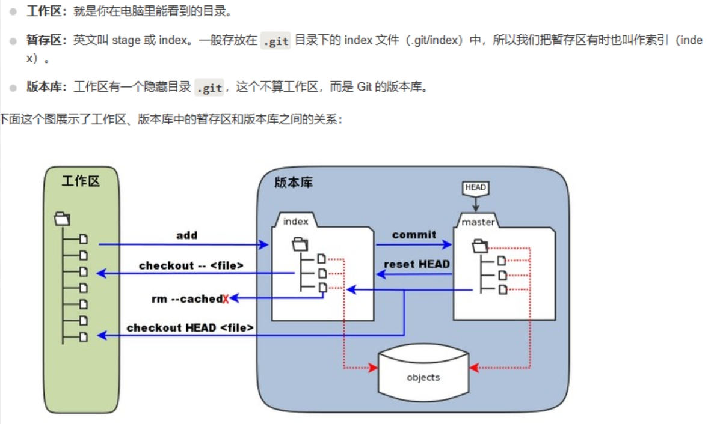
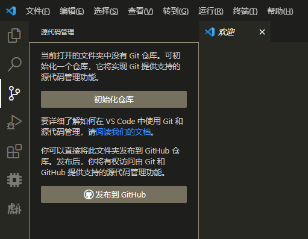
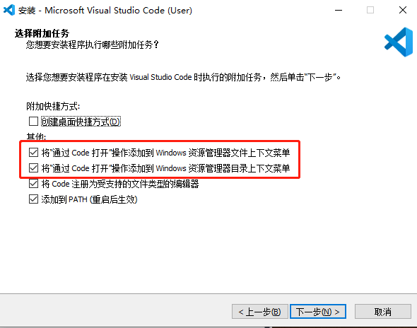

0 开发工具
Git
一、Git工作方式
Git 分布式版本控制器
---------------------------------------
workspace 工作区
index 暂存区
repository 本地仓库
remote 远程仓库
2023/07开始学习


二、Git使用流程（Git Bash）
-
1.为主机创建SSH Key（若主机存在SSH Key 则跳过）
使用Git Bash为主机创建SSH Key
Bash命令：
ssh-keygen -t rsa -C "youremail@example.com"如果一切顺利的话，可以在用户主目录里找到.ssh目录，里面有id_rsa和id_rsa.pub两个文件，这两个就是SSH Key的秘钥对，id_rsa是私钥，不能泄露出去，id_rsa.pub是公钥，可以放心地告诉任何人。
-
2.将此主机的SSH KEY添加到你的GitHub/Gitee账号（若已经添加 则跳过）
GitHub需要识别出你推送的提交确实是你推送的，而不是别人冒充的，而Git支持SSH协议，所以，GitHub只要知道了你的公钥，就可以确认只有你自己才能推送.
GitHub允许你添加多个Key。假定你有若干电脑，你一会儿在公司提交，一会儿在家里提交，只要把每台电脑的Key都添加到GitHub，就可以在每台电脑上往GitHub推送了。
每台主机对应一个SSH KEY，即为
id_rsa.pub文件的内容。 -
3.推送push/拉取pull
1.初始化本地文件夹为Git仓库（若本地文件夹不是Git仓库时）
git init2.为本地仓库添加关联的远程仓库
git remote add <name> <ssh>若首次SSH连接远程，可能由于没有.ssh/know_hosts git bash 会显示无法建立连接,vscode 显示"_or具有指纹"并且无法连接 这时需要打开bash pull一下，并且在提示后输入yes，创建know_hosts即可
-
解决冲突
1.拉取远程分支，与本地分支合并，再推送
2.以新分支推送
三、Git Bash 常用指令
-----------------------------------------init
mkdir <path_name> 创建目录
cd <path_name> 进入目录
pwd 查看当前所在路径
cat <file_name>查看文件
git init 当前目录初始化为本地git仓库
-----------------------------------------add&commit
git add <filename> 加入暂存区
git commit -m <commit> 提交至本地仓库
可以add多次多个文件，一次commit
-----------------------------------------remote
git remote -v 查看本地仓库远程库信息
git remote rm <name> 删除关联远程库
git remote add <name> <ssh> 链接关联远程库
(直接add <name> <http url>会导致要填写credential...)
git pull <name> master 拉取远程仓库
git push <name> master 推送master
git clone <repo_http> 克隆远程仓库
四、使用VScode管理Git
注意：您需要确认已经将使用主机的SSH KEY添加到 GitHub/Gitee账号
-
将本地项目文件夹初始化为Git仓库

-
添加远程仓库（使用SSH URL）

输入github/gitee的SSH连接，并且为远程仓库命名
-
暂存并且提交本地，发布至远程仓库的主线/分支

提交成功后，就可以同步至远程啦！
-
系统右键使用VScode快捷打开文件夹
不论 已安装/未安装VScode 都可以通过软件包加入功能，不会导致重装VScode配置环境变化

其他
-
gitignore：为仓库添加文件排除项、排除路径、排除文件
如果.gitignore未生效，请执行以下命令
VScode
一、VScode安装与配置
需要注意勾选右键管理功能，其他无需特别注意（忘记勾选也可以使用安装包重新勾选）
二、VScode扩展
Python开发插件
-
1.下载并且安装python，引入python环境变量
-
2.cmd测试python，vscode加载python插件
C/C++开发插件
-
C/C++扩展：支持开发C/C++
-
MSYS2（非插件）：提供MinGW（Minimalist GNU for Windows）
在系统变量的path添加你的\mingw64\bin路径
成功后可以在cmd使用指令测试环境是否添加，然后快乐编程C/C++
gcc --version g++ --version gdb --version
MCU开发插件
-
Embedded IDE：嵌入式开发插件
-
Cortex-Debug：调试插件
Cortex-debug 扩展配置：
1.配置 GBD 目录的路径 查找你的 arm-none-eabi-gdb.exe 位置。 如果没有，可以在ARM下载，或者EIDE-安装实用工具-GNU Arm Embedded Toolchain(stable)，引入bin目录即可。
2.配置 GDBServer 目录路径 查找你的 JLinkGDBServerCL.exe 位置 如果没有，可以在Jlink下载，或者EIDE-安装实用工具-JLink，需要将exe路径引入
3.配合EIDE，配置烧录器选项，生成elf，即可进入调试。